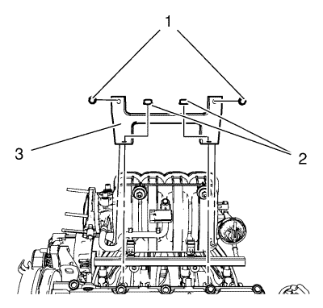
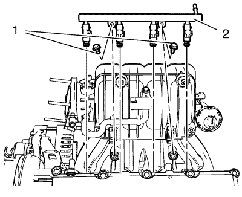
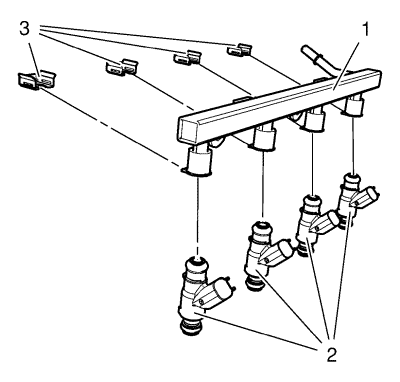

Sustitución del inyector de combustible y el distribuidor de combustible
Herramientas especiales
CH-807 Tapones de cierre
Procedimiento de desmontaje
Advertencia: Consulte Advertencia sobre la gasolina y sus vapores en la sección Prólogo.
Advertencia: Consulte Acciones a realizar cuando trabajo con advertencias de combustible en la sección Prólogo.
Advertencia: Consulte Gafas de seguridad y advertencia de combustible en la sección Prólogo.
Advertencia: Consulte Advertencia sobre fuga de combustible en la sección Prólogo.
- Abra el capó.
- Desmontar la pantalla de protección del motor. Consultar Sustitución del protector del motor .
- Desconecte el cable negativo de la batería. Consultar Desconexión y conexión del cable negativo de la batería → sin sistema de arranque/parada .
- Desconecte el mazo de cables de los inyectores de combustible.
- Coloque un recipiente recogedor debajo.
- Desconecte el adaptador de cierre rápido del conducto de alimentación de combustible. Consultar Servicio del adaptador de conexión rápida del collarín plástico .
- Cierre el conducto de alimentación de combustible y el distribuidor de combustible con el tapón CH-807.

Advertencia: La gasolina o los vapores de gasolina son muy inflamables. Puede producirse un incendio si existe una fuente de chispa. Nunca vacíe o almacene gasolina o combustible diesel en un recipiente abierto debido al riesgo de explosión o incendio. Disponga de un extintor de incendios químico seco (clase B) en las proximidades.
- Retire los 2 pernos del soporte del colector de admisión (1).
- Retire las 2 tuercas del soporte del colector de admisión (2).
- Retire el soporte del colector de admisión (3).

- Retire los 2 pernos del distribuidor de combustible (1).
Nota: Tenga cuidado durante el desmontaje. No dañe los inyectores.
- Desmonte el distribuidor de combustible (2).

- Desmonte 4 grapas de fijación (3).
- Extraiga los 4 inyectores del distribuidor de combustible de inyección (1).
Procedimiento de montaje
Nota: Aplique una capa de lubricante a los anillos de junta.
- Monte anillos de junta de inyectores NUEVOS.
Nota: Inspeccione la posición de montaje y garantice un ajuste correcto.
- Monte los 4 inyectores en el distribuidor de combustible de inyección (1).
- Monte 4 grapas de fijación (3).
Nota: Tenga cuidado durante el montaje. No dañe los inyectores ni los anillos de junta de éstos.
- Monte el distribuidor de combustible de inyección (2).
Precaución:Consulte Precaución con las fijaciones en la sección Prólogo.
- Monte los 2 pernos del distribuidor de combustible de inyección (1) y apriételos a 25 N·m (18 lib. pie).
- Desmonte los tapones CH-807.
- Conecte el adaptador de cierre rápido del conducto de alimentación de combustible.
- Conecte el mazo de cables a los inyectores de combustible.
- Monte el soporte del colector de admisión (3).
- Monte las 2 tuercas del soporte del colector de admisión (2) y apriételas a 25 N·m (18 lib. pie).
- Monte los 2 pernos del soporte del colector de admisión (1) y apriételos a 25 N·m (18 lib. pie).
- Conecte el cable negativo de la batería. Consultar Desconexión y conexión del cable negativo de la batería → sin sistema de arranque/parada .
- Monte el protector del motor. Consultar Sustitución del protector del motor .
- Cierre el capó.
| © Copyright Chevrolet. All rights reserved |